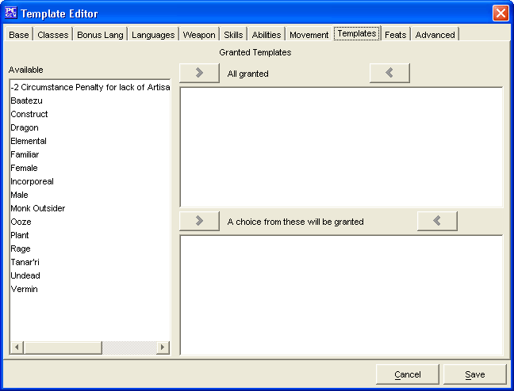

The Templates Tab is used to add Granted Templates for the Template being created.
The three Granted Templates windows, Available, All Granted and A choice from these will be granted are used to create a list of Granted Templates.
The Cancel and Save buttons, which appear on every tab, are used to either cancel the Template creation or save it to the customTemplates.lst file.